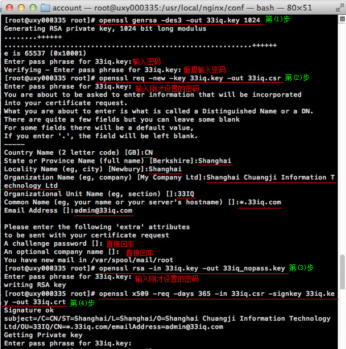

SSL证书申请、颁发说明
创建证书步骤

一般情况下，制作证书要经过几个步骤，如上图所示。
- 首先用openssl genrsa生成一个私钥
- 然后用openssl req生成一个签署请求
- 最后把请求交给CA，CA签署后就成为该CA认证的证书
如果生成签署请求时加上-x509参数，那么就直接生成一个self-signed的证书，即自己充当CA认证自己。
如果您只是想做一张测试用的电子证书或不想花钱去找个 CA 签署，您可以造一张自签 (Self-signed) 的电子证书。当然这类电子证书没有任何保证，大部份软件偶到这证书会发出警告，甚至不接收这类证书。使用自签名(self-signed)的证书，它的主要目的不是防伪，而是使用户和系统之间能够进行SSL通信，保证密码等个人信息传输时的安全。
这里先说下证书相关的几个名词：
- RSA私钥能解密用证书公钥加密后的信息。通常以.key为后缀，表示私钥也称作密钥。是需要管理员小心保管，不能泄露的。
- CSR(Certificate Signing Request)包含了公钥和名字信息。通常以.csr为后缀，是网站向CA发起认证请求的文件，是中间文件。
- 证书通常以.crt为后缀，表示证书文件。
- CA(Certifying Authority)表示证书权威机构，它的职责是证明公钥属于个人、公司或其他的组织。
制作自签名证书
自行颁发SSL证书(不受浏览器信任)，使用openssl生成RSA密钥及证书。
# 生成一个RSA密钥 openssl genrsa -des3 -out 33iq.key 1024 # 拷贝一个不需要输入密码的密钥文件 openssl rsa -in 33iq.key -out 33iq_nopass.key # 生成一个证书请求 # 会提示输入省份、城市、域名信息等，重要的是email一定要是你的域名后缀的； # 这样就有一个 csr 文件了，提交给 ssl 提供商的时候就是这个 csr 文件。 # CA会给你一个新的文件cacert.pem，那才是你的数字证书。 openssl req -new -key 33iq.key -out 33iq.csr # 自己签发证书 openssl x509 -req -days 365 -in 33iq.csr -signkey 33iq.key -out 33iq.crt # 直接生成自签发证书 # 如果生成签署请求时加上-x509参数，那么就直接生成一个self-signed的证书，即自己充当CA认证自己 openssl req -x509 -newkey rsa:1024 -nodes -days 999 -keyout 33iq.key -out 33iq.crt
生成证书请求时，会提示输入省份、城市、域名信息等， 重要的是，email一定要是你的域名后缀的 。
在要求输入Common Name(eg, YOUR name)时，输入你的主机名。Common Name必须和httpd.conf中server name必须一致，否则apache不能启动。启动apache时错误提示为：RSA server certificate CommonName (CN) `Koda’ does NOT match server name!? 。
这样就有一个 csr 文件了，提交给 ssl 提供商的时候就是这个 csr 文件。当然我这里并没有向证书提供商申请，而是在第4步自己签发了证书。

除了openssl方式外，在Debian或者Ubuntu系统中有更加简便的方法制作self-signed证书使用make-ssl-cert命令。该命令在ssl-cert的包里，一般会伴随着Apache的安装而安装，可能单独安装也可以。
apt-get install ssl-cert # make-ssl-cert生成证书的方法有两种，一种是根据生成按工具默认的方式生成，一种是按模板文件生成。 #默认的方式生成,生成的公钥(证书)在/etc/ssl/certs/ssl-cert-snakeoil.pem，私钥在/etc/ssl/private/ssl-cert-snakeoil.key。 make-ssl-cert generate-default-snakeoil # 按模板文件生成 # 这里生成的证书采用pem格式，这个pem格式档案中包含了私钥和公钥(证书)两部分内容。 # make-ssl-cert是只能由root执行的命令。 make-ssl-cert /usr/share/ssl-cert/ssleay.cnf /etc/ssl/private/apache2.pem
nginx配置ssl
编辑配置文件nginx.conf，给站点加上HTTPS协议
server {
listen 443;
server_name YOUR_DOMAINNAME_HERE;
ssl on;
ssl_certificate /usr/local/nginx/conf/33iq.crt;
ssl_certificate_key /usr/local/nginx/conf/33iq_nopass.key;
# 若ssl_certificate_key使用33iq.key，则每次启动Nginx服务器都要求输入key的密码。
ssl_session_cache shared:SSL:10m;
ssl_session_timeout 10m;
ssl_protocols SSLv3 TLSv1 TLSv1.1 TLSv1.2;
#ssl_ciphers ALL:!ADH:!EXPORT56:RC4+RSA:+HIGH:+MEDIUM:+LOW:+SSLv2:+EXP;
ssl_ciphers RC4:HIGH:!aNULL:!MD5;
ssl_prefer_server_ciphers on;
location / {
root /usr/local/nginx/html;
index index.html;
}
}
重启Nginx后即可通过https访问网站了。
自行颁发的SSL证书能够实现加密传输功能，但浏览器并不信任，会出现“此网站的安全证书有问题”的提示。
apache配置ssl
-
模块设置
a2enmod ssl # 开启SSL模块 a2ensite default-ssl # 启用SSL站点
-
加入监听端口
vi /etc/apache2/ports.conf #编辑Apache端口配置，加入443端口 Listen 443
-
配置虚拟主机
# 编辑default-ssl文件，加入证书对应的主机头。 vi /etc/apache2/sites-enabled/default-ssl ServerName www.mike.me
-
配置SSL证书
# 编辑配置文件，修改如下几行 # 如果SSLCertificateFile中指定的证书已包含相应私钥，SSLCertificateKeyFile这一行就可以注释掉。 # 前面用make-ssl-cert生成的证书就是同时包含公钥和私钥的，所以这里注释掉了。 vi /etc/apache2/sites-enabled/default-ssl # 如果是自签名证书，按如下配置： SSLEngine on SSLCertificateFile /etc/ssl/private/apache2.pem #SSLCertificateKeyFile /etc/ssl/private/ssl-cert-snakeoil.key # 如果是第三方签署的CA证书，按如下配置： SSLEngine on SSLCertificateFile /etc/ssl/certs/ssl-cert-snakeoil.pem SSLCertificateKeyFile /etc/ssl/private/ssl-cert-snakeoil.key SSLCertificateChainFile /etc/ssl/certs/server-ca.crt
-
配置指令含义
- SSLEngine ：这个指令用于开启或关闭SSL/TLS协议引擎。
- SSLCertificateFile：该指令用于指定服务器持有的X.509证书(PEM编码)，其中还可以包含对应的RSA或DSA私钥。如果其中包含的私钥已经使用密语加密，那么在Apache启动的时候将会提示输入密语。
- SSLCertificateKeyFile：指定了服务器私钥文件(PEM编码)的位置。如果SSLCertificateFile指定的服务器证书文件中不包含相应的私钥，那么就必须使用该指令，否则就不需要使用。
- SSLCertificateChainFile：这个指令指定了一个多合一的CA证书，用于明确的创建服务器的证书链。这个证书链将被与服务器证书一起发送给客户端，由直接签发服务器证书的CA证书开始，按证书链顺序回溯，一直到根CA的证书结束，这一系列的CA证书(PEM格式)就构成了服务器的证书链。这有利于避免在执行客户端认证时多个CA证书之间出现混淆或冲突。
受浏览器信任的证书
要获取受浏览器信任的证书，则需要到证书提供商处申请。证书授证中心，又叫做CA机构，为每个使用公开密钥的用户发放一个数字证书。浏览器在默认情况下内置了一些CA机构的证书，使得这些机构颁发的证书受到信任。VeriSign即是一个著名的国外CA机构，工行、建行、招行、支付宝、财付通等网站均使用VeriSign的证书，而网易邮箱等非金融网站采用的是中国互联网信息中心CNNIC颁发的SSL证书。一般来说，一个证书的价格不菲，以VeriSign的证书为例，价格在每年8000元人民币左右。
据说也有免费的证书可以申请。和VeriSign一样，StartSSL也是一家CA机构，它的根证书很久之前就被一些具有开源背景的浏览器支持（Firefox浏览器、谷歌Chrome浏览器、苹果Safari浏览器等）。后来StartSSL竟然搞定了微软：在升级补丁中，微软更新了通过Windows根证书认证（Windows Root Certificate Program）的厂商清单，并首次将StartCom公司列入了该认证清单。现在，在Windows 7或安装了升级补丁的Windows Vista或Windows XP操作系统中，系统会完全信任由StartCom这类免费数字认证机构认证的数字证书，从而使StartSSL也得到了IE浏览器的支持。（来源及申请步骤）
申请提交给 ssl 提供商后，一般半个钟头到一天时间就会发给你证书:
AddTrustExternalCARoot.crt PositiveSSLCA.crt UTNAddTrustServerCA.crt zou.lu-certificate.zip zou_lu.crt # 颁发的证书 zoulucert.csr # 自己生成的证书申请 zoulukey.pem # 自己生成的私钥
一般情况下，直接用证书签发机构颁发的 crt 文件即可，比如 zou_lu.crt ，但是有很多证书签发机构默认在 Firefox 中文版下是不会信任的，经过仔细研究，终于发现，原来得把证书签发机构办法给你的 crt 文件也放入才行。
方法如下：
# 合并 PositiveSSLCA.crt （证书签发机构的 crt） 和 zou_lu.crt (自己域名的 crt) cat zou_lu.com.crt PositiveSSLCA.crt > zou_lu.chained.crt
或者直接用记事本打开，然后复制 PositiveSSLCA.crt 里面所有的内容到 zou_lu.crt 最下方即可。
只针对注册、登陆进行https加密处理
既然HTTPS能保证安全，为什么全世界大部分网站都仍旧在使用HTTP呢？使用HTTPS协议，对服务器来说是很大的负载开销。从性能上考虑，我们无法做到对于每个用户的每个访问请求都进行安全加密（当然，Google这种大神除外）。作为一个普通网站，我们所追求的只是在进行交易、密码登陆等操作时的安全。通过配置Nginx服务器，可以使用rewrite来做到这一点。这样一来，用户会且只会在访问logging.php的情况下，才会通过https访问。
更新：有一些开发框架会根据 $_SERVER['HTTPS'] 这个 PHP 变量是否为 on 来判断当前的访问请求是否是使用 https。为此我们需要在 Nginx 配置文件中添加一句来设置这个变量。遇到 https 链接重定向后会自动跳到 http 问题的同学可以参考一下。
server {
...
listen 443;
# 在https server下加上判断
if ($uri !~* "/logging.php$")
{
rewrite ^/(.*)$ http://$host/$1 redirect;
}
location \.php$ {
...
include fastcgi_params;
fastcgi_param HTTPS on; # 多加这一句
}
}
server {
...
listen 80;
# 在http server下加上判断
if ($uri ~* "/logging.php$")
{
rewrite ^/(.*)$ https://$host/$1 redirect;
}
location \.php$ {
...
include fastcgi_params;
}
}
服务器/客户端双向认证
- 作者：kunoy
- nginx配置SSL实现服务器/客户端双向认证:http://blog.csdn.net/kunoy/article/details/8239653
建立ca目录
在nginx目录下建立ca文件夹:
nginx_dir=/usr/local/nginx mkdir -p "$nginx_dir/ca" \ && cd "$nginx_dir" \ && mkdir newcerts private conf server
-
其中:
- newcerts: 存放CA签署（颁发）过的数字证书（证书备份目录）。
- private: 目录用于存放CA的私钥。
- conf: 存放一些简化参数用的配置文件。
- server: 存放服务器证书文件。
openssl.conf配置
也可以直接修改openssl的配置文件，这样的话后面制作证书的代码中就不用引用这个配置文件了。
conf/openssl.conf配置文件:
[ ca ]
default_ca = foo # The default ca section
[ foo ]
dir = /usr/local/nginx/ca # top dir
database = /usr/local/nginx/ca/index.txt # index file.
new_certs_dir = /usr/local/nginx/ca/newcerts # new certs dir
certificate = /usr/local/nginx/ca/private/ca.crt # The CA cert
serial = /usr/local/nginx/ca/serial # serial no file
private_key = /usr/local/nginx/ca/private/ca.key # CA private key
RANDFILE = /usr/local/nginx/ca/private/.rand # random number file
default_days = 365 # how long to certify for
default_crl_days= 30 # how long before next CRL
default_md = md5 # message digest method to use
unique_subject = no # Set to 'no' to allow creation of
# several ctificates with same subject.
policy = policy_any # default policy
[ policy_any ]
countryName = match
stateOrProvinceName = match
organizationName = match
organizationalUnitName = match
localityName = optional
commonName = supplied
emailAddress = optional
生成新的CA证书
下面的几个脚本都放在nginx/ca/目录下。
执行 new_ca.sh 生成新的CA证书:
#!/bin/sh # Generate the key. openssl genrsa -out private/ca.key # Generate a certificate request. openssl req -new -key private/ca.key -out private/ca.csr # Self signing key is bad... this could work with a third party signed key... # registeryfly has them on for $16 but I'm too cheap lazy to get one on a lark. # I'm also not 100% sure if any old certificate will work or if you have to buy # a special one that you can sign with. I could investigate further but since this # service will never see the light of an unencrypted Internet see the cheap and lazy remark. # So self sign our root key. openssl x509 -req -days 365 -in private/ca.csr -signkey private/ca.key -out private/ca.crt # Setup the first serial number for our keys... can be any 4 digit hex string... # not sure if there are broader bounds but everything I've seen uses 4 digits. echo FACE > serial # Create the CA's key database. touch index.txt # Create a Certificate Revocation list for removing 'user certificates.' openssl ca -gencrl -out private/ca.crl -crldays 7 -config conf/openssl.conf
生成新服务器的证书
执行 new_server.sh 生成新服务器的证书:
# Create us a key. # Don't bother putting a password on it since you will need it to start apache. # If you have a better work around I'd love to hear it. openssl genrsa -out server/server.key # Take our key and create a Certificate Signing Request for it. openssl req -new -key server/server.key -out server/server.csr # Sign this bastard key with our bastard CA key. openssl ca -in server/server.csr -cert private/ca.crt -keyfile private/ca.key -out server/server.crt -config conf/openssl.conf
配置nginx的ssl支持
#user www-nginx;
worker_processes 1;
#error_log logs/error.log;
#error_log logs/error.log notice;
#error_log logs/error.log info;
#pid logs/nginx.pid;
events {
worker_connections 1024;
}
http {
include mime.types;
default_type application/octet-stream;
sendfile on;
keepalive_timeout 65;
#gzip on;
# HTTPS server
#
server {
listen 443;
server_name localhost;
# 开启SSI
ssi on;
ssi_silent_errors on;
ssi_types text/shtml;
ssl on;
ssl_certificate /usr/local/nginx/ca/server/server.crt;
ssl_certificate_key /usr/local/nginx/ca/server/server.key;
ssl_client_certificate /usr/local/nginx/ca/private/ca.crt;
ssl_session_timeout 5m;
ssl_verify_client on; #开户客户端证书验证
ssl_protocols SSLv2 SSLv3 TLSv1;
ssl_ciphers ALL:!ADH:!EXPORT56:RC4+RSA:+HIGH:+MEDIUM:+LOW:+SSLv2:+EXP;
ssl_prefer_server_ciphers on;
location / {
root /usr/local/nginx/html;
index index.html;
}
}
}
启动nginx ,等待客户连接，如果此时连接服务器，将提示400 Bad request certification的错误，故还需要生成客户端证书。
生成一个客户端证书
执行 new_user.sh 生成一个 client证书。
#!/bin/sh # The base of where our SSL stuff lives. base="/usr/local/nginx/ca" # Were we would like to store keys... in this case we take the username given to us and store everything there. mkdir -p $base/users/ # Let's create us a key for this user... yeah not sure why people want to use DES3 but at least let's make us a nice big key. openssl genrsa -des3 -out $base/users/client.key 1024 # Create a Certificate Signing Request for said key. openssl req -new -key $base/users/client.key -out $base/users/client.csr # Sign the key with our CA's key and cert and create the user's certificate out of it. openssl ca -in $base/users/client.csr -cert $base/private/ca.crt -keyfile $base/private/ca.key -out $base/users/client.crt -config conf/openssl.conf # This is the tricky bit... convert the certificate into a form that most browsers will understand PKCS12 to be specific. # The export password is the password used for the browser to extract the bits it needs and insert the key into the user's keychain. # Take the same precaution with the export password that would take with any other password based authentication scheme. openssl pkcs12 -export -clcerts -in $base/users/client.crt -inkey $base/users/client.key -out $base/users/client.p12
按照提示一步一步来，这里要注意的是客户证书的几个项目要和根证书匹配。也就是前面配置的:
- countryName = match
- stateOrProvinceName = match
- organizationName = match
- organizationalUnitName = match
不一致的话无法生成最后的客户证书，证书生成后，客户端导入证书浏览器，即可打开网站。
注意事项
- 制作证书时会提示输入密码，服务器证书和客户端证书密码可以不相同。
- 服务器证书和客户端证书制作时提示输入省份、城市、域名信息等，需保持一致。